Here are some of the most unique cultural sites in Ethiopia:
| 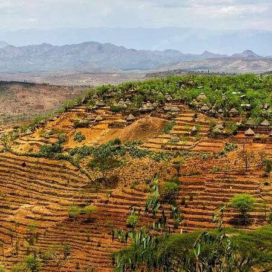 |
Konso Cultural Landscape:
A UNESCO World Heritage site, Konso is known for its walled hilltop villages, terraced agriculture, and wooden grave markers called "waka." |
| 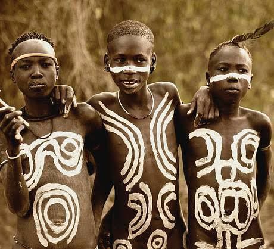 |
Omo Valley:
A cradle of ethnic diversity, the valley is home to tribes like the Mursi, Hamar, and Karo. Each tribe maintains unique languages, rituals, and adornments. |
| 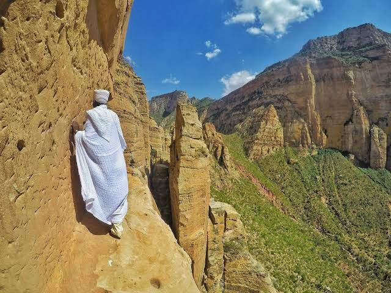 |
Tigray Rock Churches:
These cliffside churches are not only religious but cultural centers. Many contain ancient manuscripts, paintings, and still-functioning monastic communities. |
| 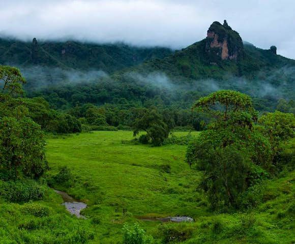 |
Bale Mountains:
Home to the Oromo people and rare wildlife, these highlands are closely tied to traditional beliefs, pastoralist life, and spiritual practices. |

|
Harar Jugol:
Besides its historical importance, Harar has a rich cultural life, with poetry, coffee ceremonies, and Harari traditions passed down for generations. |
| 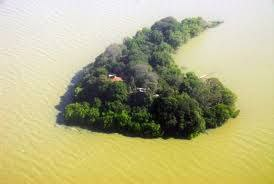 |
Lake Tana Monasteries: Known for its castles and palaces from the 17th century, often called the “Camelot of Africa” for its impressive royal enclosure.
Monks live in simple isolation on islands, preserving centuries-old paintings, crosses, and books. Each monastery is tied to a saint or spiritual tale. |
| 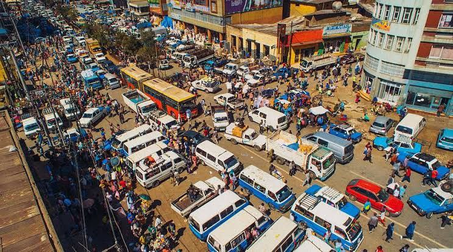 |
Merkato (Addis Ababa):
Africa's largest open-air market, it reflects Ethiopia's ethnic and cultural mix through goods, languages, and foods. |
| 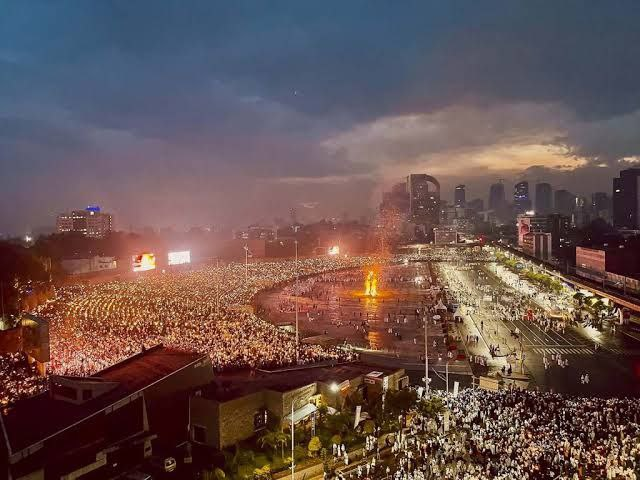 |
Meskel Square:
The site of national holidays, especially the Meskel Festival in September, where a massive bonfire commemorates the discovery of the True Cross. |
| 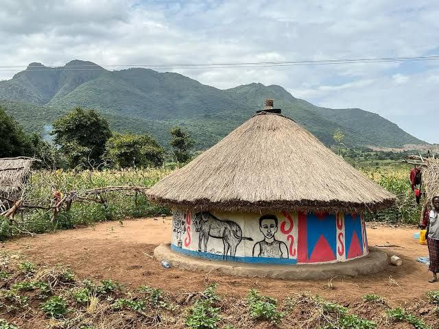 |
Ari Village:
Known for traditional pottery, ironwork, and weaving. Homes are made from bamboo and mud in circular patterns with thatched roofs. |
| 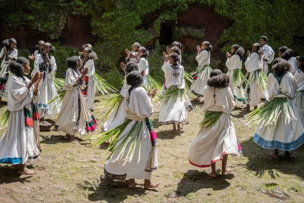 |
Ashenda Festival:
Celebrated by Tigrayan and Amhara girls with singing, dancing, and colorful traditional dress. It's a celebration of femininity and community. |
| 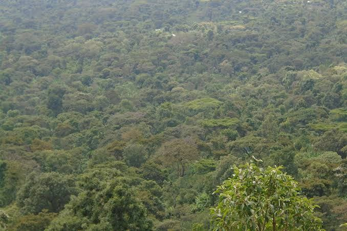 | The
Gedeo Cultural Forest:
Indigenous Gedeo people practice sustainable agroforestry, combining food cultivation and sacred forest protection. |
.jpg)
|
. Sidama Coffee Culture:
Coffee ceremonies are central to Sidama society. It's a time of socializing and spiritual reflection, with deep cultural etiquette. |
|
Debre Zeit (Bishoftu):
Known for crater lakes and as a spiritual retreat, this town is central to Oromo culture and holiday celebrations. |
|
| 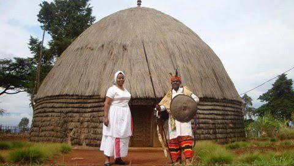 |
Sodo Wolaita Sites:
Wolaita people are known for storytelling, oral literature, and vibrant dance traditions, passed through generations. |
| 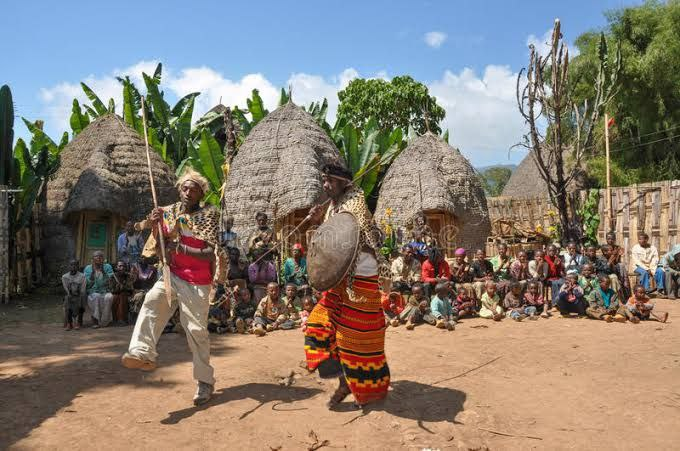 |
Dorze Village :
Giant bamboo huts, false banana bread (kocho) A highland tribe famous for weaving and elephant-shaped houses. |
.jpg)
|
Jinka & Key Afar Market :
Tribal trading hub (Ari, Banna, Tsemay) Beads, guns, and gossip in Ethiopia's wildest open-air market. |
| 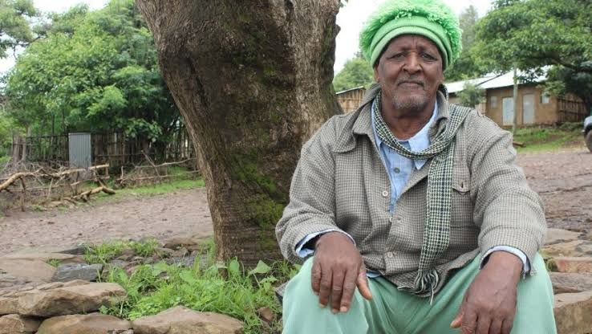 |
Awra Amba :
No religion, no gender roles, pure socialism A cotton-weaving utopia where women lead and work is shared. |
| 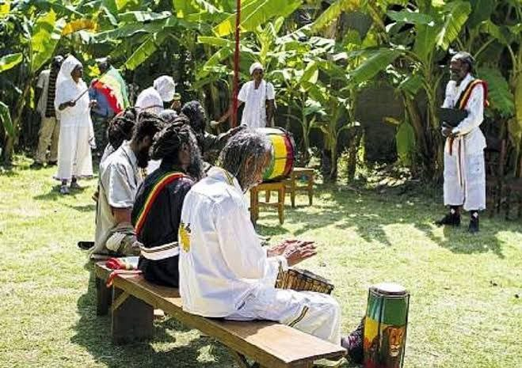 |
Shashamene (Rasta Town):
Jamaican repatriates, reggae, Ital food Haile Selassie gave them land; now it's dreadlocks and vegan stews. |
| 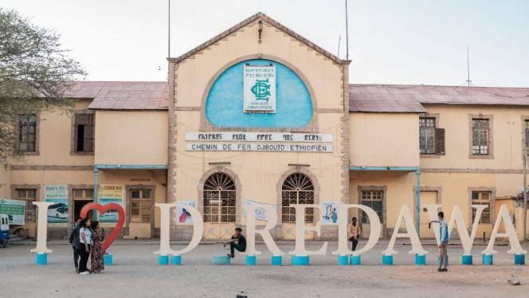 |
Dire Dawa (Khat City):
Chew khat by day, jazz by night Ethiopia's most chilled city, where the train station still has 1920s vibes. |